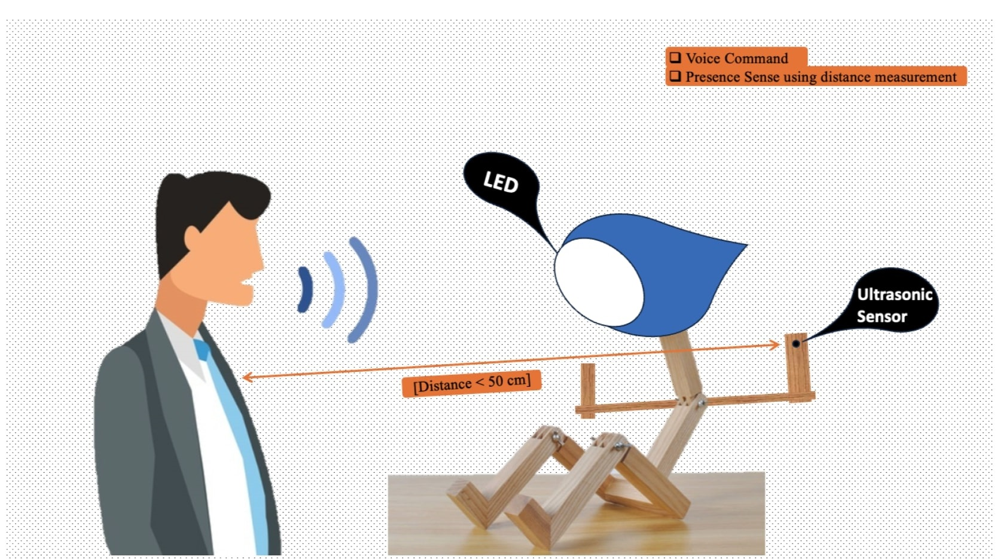

Light Manager of My Desk
A smart voice controlled table lamp that detects user’s presents.
The voice-controlled table lamp is able to sense the presence of the user when they are at the table to do their work. Here, the user does not have to command the light to turn when they are at the table and it automatically turns itself off when there is no one at the table or the person is gone. In case the user wants the light to be turned off when they are at the table they can simply say “Turn the Light off” and the light will go off. The user also has the control to manually switch the light on and off whenever they want. The brightness and the color of the Lamp can also be controlled with the voice command.
How It Works
We are mainly using voice commands to control the light and its brightness. Microphone and Arduino are used here to do this process. To understand the presence of the user, we are using an ultrasonic sensor that will measure the distance. If it finds anything near, it will turn itself on. The Lamp body will be humanoid and parts can be movable. The ultrasonic sensor will be at the hand of the table lamp (Humanoid Shape), so it can be moved around. This is how the users can move it around to help the lamp figure out their (users) position (where they sit).
Innovation
There are many table lamps out there that only work on physical switches and very few of them have voice control. But in our Table Lamp, we have both voice control and a physical switch to control the lamp. And at the same time, it can understand the presence of the user. Also, the shape will be humanoid which will be pretty attractive and more appealing to the market.